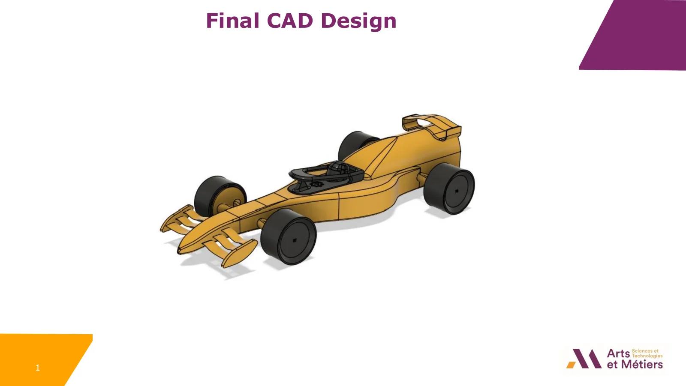

F1 in Schools - Mini voiture de Formule 1
Conception et fabrication d'une mini F1 propulsée au CO2 pour un sprint de 20 m, selon la stricte réglementation 2024.
Contexte et objectif du projet
Ce projet fait partie du challenge international F1 in Schools. L'objectif est de concevoir une mini voiture de Formule 1 propulsée par une cartouche de CO2 de 8 g, usinée à partir d'un bloc modèle F1 homologué, et optimisée pour parcourir une piste droite de 20 m le plus vite possible tout en respectant les règles techniques 2024 (T1 à T10).
Objectif ingénierie : conformité stricte, performances aérodynamiques, stabilité au roulement, fabricabilité CNC et livrables professionnels.
// OUTILS ET MÉTHODES
Étude de cas PDF (EN)
Pages du portfolio

Livrables
- -Modèle CAD complet (Fusion 360, export STEP)
- -Dessins techniques 2D avec dimensions et tolérances
- -Rendus 3D réalistes pour la communication
- -Simulations CFD avec cartes de pression, de vitesse et de frottement
- -Prototype imprimé en 3D pour validation de l'ajustement et de l'assemblage
- -Programmation FAO et simulation d'usinage CNC
- -Contrôle dimensionnel (CAD vs prototype et usinage)
- -Rapport final et documentation de conformité
Stratégie de flux de travail et de conformité
- -Boucle itérative entre CAD, CFD, prototypage et CAM
- -Identification précoce des règles de blocage et des éléments de sécurité
- -Caractéristiques requises : caisse monobloc, guides d'attache, chambre à CO2, visibilité des roues
- -Géométrie conservatrice pour éviter les dépassements de limites
- -Conçu pour un accès CNC et un assemblage propre
CAD et itérations de conception
- -Redémarrage du modèle à partir de zéro pour éviter les erreurs héritées
- -Sous-ensembles structurés pour des itérations rapides
- -3 à 4 versions affinées pour la conformité et l'usinabilité
- -Halo et casque conservés en pièces standard fournies
Analyse et résultats CFD
- -Simulation de demi-géométrie pour réduire le temps de calcul
- -Débit d'air réglé à 50 m/s pour des diagnostics comparatifs
- -Jupe latérale retirée et transitions d'ailes optimisées
- -Problème tardif : la tige de l'aile avant a perturbé le débit d'admission
Prototypage et validation
- -Prototype imprimé en 3D pour valider la géométrie et l'assemblage
- -Filament lumineux et orientation verticale pour la qualité
- -Zone faible de l'essieu avant détectée et renforcée dans CAD
Usinage FAO et CNC
- -Parcours d'outil en deux étapes : ébauche puis finition sphérique
- -Fixation sur mesure insérée dans le trou central pour la rotation
- -Incident : origine non réinitialisée, provoquant un décalage angulaire
- -Usinage en cours au moment du rapport
Journée d'essai
En théorie, tout s'arrête parfaitement. En pratique, on rencontre parfois la caméra.